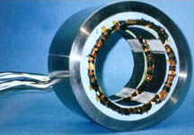
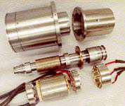

|
2.2.
Manyetik Yatak Elemanlarý
Bu
bölümde manyetik yatak elemanlarýyla ilgili kýsa tanýmlamalarý
verilecektir. Yatak içinde veya dýþýndaki görevleri 3. Bölüm'
de daha kapsamlý iþlenecektir.
2.2.1.
Rotor
Manyetik
bir alanýn meydana getirilmesinde ferromanyetik bir rotora
ihtiyaç duyulmaktadýr. Rotor, küme halinde ince tabakalý bileziklerden
oluþur (Þekil 2.3).
Þekil 2.3. Rotor
2.2.2.
Stator
Rotorun
etrafýnda manyetik akýmýn iletildiði 4 adet mýknatýstan oluþur
(Þekil 2.4).
Þekil 2.4. Stator ve Manyetik Akýmýn Oluþmasý
Stator,
rotorun etrafýnda 4 adet mýknatýstan oluþmaktadýr. Bobinlerin
yardýmýyla manyetik kuvvete ulaþan stator, þaftý dengede tutmak
için bu kuvvetleri kullanmaktadýr. Statorlarýn malzemesi genellikle
yüksek sýcaklýklara dayanabilen, mýknatýslanabilir özelliðe
sahip kobalt alaþýmlý çelikten seçilmektedir (Þekil 2.5).
Þekil 2.5. Stator Kümesi
2.2.3.
Bobinler
Her
bir kutubun etrafýna çevrilmiþlerdir. Bu sebepten manyetik
yatak içersinde 4 çeyreðe bölünmüþtür. Dikeye 45 derecelik
bir açý yaparlar. Elektromanyetik kuvvetin oluþturulmasýnda
kullanýlmak üzere belli bir sarým sayýsýna sahiptirler. Her
nekadar bir elektrik motorunda bobinlerin sahip olduklarý
sarým sayýlarý motorun gücüne etki ediyorsa, manyetik yataklarda
da ayný mantýk söz konusudur. Þekil 2.6'da bir manyetik yatak
içersinde bobinlerin durumu görmekteyiz.
Þekil 2.6. Bobinler
2.2.4.
Kontrolör - Radyal Yataklar
Tipik
bir sistemin oluþumu, bir itici yatak ve iki radyal yataktan
oluþmaktadýr (Þekil 2.7). Stator ve sisteminin monte edilmesi
ile, saftýn üzerine ayarlanmýþ ferromanyetik rotorun oluþturduðu
aerodinamik kuvvetler ortadan kaldýrýlabilmektedir. Radyal
yataklara benzer bir tasarýmý olmasý sebebiyle bir diðer adý
da radyal hareketlendirici olarak tanýmlanmaktadýr. Hareketlendiricinin
görevi þaftýn dönme esnasýnda belli bir mesafede seyretmesi
için aradaki mesafenin korunmasýnda itici görevi görmektedir.
Genel olarak manyetik yataklarda bu mesafe 0.254 mm' dir (Þekil
2.6).
Þekil 2.7. Radyal Yatak Kontrolü ve Tasarýmý
2.2.5.
Kontrolör - Ýtici Yataklar
Endüstriyel
sistemlerde, eksenel ya da itici yatak iki adet statoru kapsamaktadýr.
Aralarýndan bir tanesi rotor disktir. Statorlar som çelikten
yapýlarak gene ayný malzemeden yapýlan takozlarla desteklenirler.
Bu statorlar ve radyal oluklarýn aralarýna takoz olarak yerleþtirilmiþ
olan ince tabakalý elemanlar, yataðýn tepkisin düzeltilmesi
için kullanýlmaktadýr (Þekil 2.8). Ýtici statorlar yüzeyleri
bobinlerle doldurulmuþ bir yada iki dairesel oluklu mekanizmaya
sahiptir (Þekil 2.9)
|
Þekil 2.8. Ýtici Yatak Kontrolü ve Tasarýmý
|

Þekil 2.9. Bobinlerle Desteklenmiþ Ýtici Yatak |
2.2.6.
Kontrol Sistemleri
Manyetik
yataðýn kontrol edilmesi, þaft pozisyonunun geri besleme bilgisi,
kontrol sisteminin müsaade ettiði miktar kadar olmaktadýr.
Sistemin güvenli olarak iþlemine devam etmesi açýsýndan güvenlik
merkezi olarak adlandýrýlabilir . Kontrolün geri iletilmesi
ile þaft bir defa döndürülerek dengeye alýnmasý saðlanýr.
Bu durum saftýn duraðan pozisyonda tutulmasý için gereklidir.
Örnek adlandýrma (ilk adlandýrma) þaftýn merkez pozisyonunun
üzerinde olduðu ve artýþ saðlanýp merkez pozisyonunun altýna
indirilmesi yataðýn üzerine indirilerek yapýlýr. Genelde üç
ana elemandan oluþmaktadýrlar. Bunlar ;
2.2.6.1
Sensörler (Algýlayýcýlar)
Sensörler
þaft hakkýndaki bilginin iletilmesinde (alýnmasýnda) ve elektrik
voltajýnýn uygun düzeyde tutulmasýnda kontrol görevi yapmaktadýrlar.
Normalde saftýn hazýr konuma geçmesi sensörlerin yardýmý ile
olmaktadýr. Sensörler hüküm barýndýrmayan voltajla yüklenirler
(yalýtkandýrlar). Sensörler þaftýn aldýðý pozisyon durumuna
göre negatif ve pozitif voltaj üretimi yapmaktadýrlar. Mesela,
þaft dönme hareketine gerçekleþtirmeye baþladýðýnda merkezinden
yukarý doðru bir kaçýklýk yaparsa pozitif voltaj üretimi,
alta doðru bir kaçýklýkta ise negatif voltaj üretimi söz konusudur.
Sonuçta þaft her durumda denge konumunda tutulur.
2.2.6.2
Kontrolör
Sensorlerin
bulunduðu konum itibari ile algýlayýcýlardan gelen voltaj
sinyallerine cevap veren bir iþlemcidir (Þekil 2.10). Bu tür
bilgilere sahip iþlemci amplifikatörlerin ihtiyacý oranýnda
iþlem yapar .
Þekil 2.10. Kontrol Ünitesi ve Stator Örneði
Kontrolör
kendi içersinde üç gruba ayrýlmaktadýr. Bunlar ;
1.
A / D ve D / A Sayýsal Ýþlemciler
Bu çeviriciler sistemden çýkan anolog (tek çýkýþlý) sinyallerini
dijitale çeviren sayýsal dönüþtürücü (A / D) ve sisteme
giren dijital sinyalleri de analoða çeviren diðer sayýsal
dönüþtürücü, (D / A) kontrolör elemanlarýdýr. Bunlar PWM
devresiyle bir bütün halinde çalýþýrlar. Tamamiyle birbirlerini
tamamlayarak çalýþmalarýný sürdürürler (Tablo 2.1). Çeviricilerin
belli bir sýra halinde iþlemlerini gerçekleþtirmesi CPU
(iþlemci) tarafýndan saðlanmaktadýr. Yataktan çýkan sinyaller
anolog olarak CPU' ya ulaþýr. Daha sonra yataða doðru ilerleyen
sinyaller D / A çeviricisi tarafýndan tekrar dijitale çevrilerek
yataðýn gelen sinyalleri dijital (çift çýkýþlý) olarak almasý
saðlanýr.
Tablo 2.1. CPU' da Operasyon Seyri
2.
Deðiþtirici (PWM) Jeneratör
Çeviricilerden
çýkan sinyaller doðrultusunda, gerçek ve güncel olan sistem
arasýndaki hata PWM sinyali olarak tanýmlanarak amplifikatöre
gönderilir. Bu gönderilen bilgi geniþliðine göre eðilim
gösteren frekans deðiþtirici (PWM) bobinlere gönderilerek
PWM dalgasý oluþturulur 1998 yýlýnda NASA, Maryland Üniversitesi
ile birlikte yaptýðý lâboratuar çalýþmalarý ile deðiþtirici
jeneratörün üzerinde birçok çalýþma yapmýþtýr (Þekil 2.11).
Þekil 2.11. Deðiþtirici Jeneratör
3.
Anti - Alizenik Filtreler
Algýlayýcýlardan
alýnan gerilim doðruca anti-alizanik filtrelerden geçirilerek
bu sayede sinyallerde oluþan yüksek gerilimler atýlýr. Yüksek
gerilimler ses dalgasý oluþturmakta ve bu ses dalgasý þaftýn
hatalý bir konumda durmasýna sebebiyet verebilmektedir.
Ek olarak kontroller, bu sinyali periyodik olarak ürettiði
için, kontrolör içine yüksek frekans bilgilerinin bazýsý
düþük, hatalý frekans olarak alýnabilmektedir. Bu durum
üzerine katlama, bükülme olarak tanýmlanmaktadýr .
2.2.6.3
Amplifikatörler
Her
yatak, bobinlerinin ve rotor boyunca herbir eksen pozisyonunun
hatasýz olarak saðlanmasý ve çekici kuvvetlerin meydana getirilmesi
için birkaç amplifikatöre sahiptir. Temel olarak amplifikatörlerin
voltaj anahtarlarý vardýr. Bunlarýn yüksek frekanslarda açýlýp
kapatýlmasý ve komuta edilmesi kontroller tarafýndan saðlanmaktadýr.
Þekil 2.12' de Yataðýn belli baþlý elemanlarý görülmektedir:

Þekil 2.12. Radyal, Ýtici yatak, Rotor ve Stator
2.2.7
Düþürücü - Düþük Geçiþ Filtresi
Düþürücünün
kullanýmý ile yüksek frekansýn meydana getirebileceði zararlý
etkilerin önüne geçilebilmektedir. Bu filtrelerdeki frekans
deðeri genel olarak sistemin kritik frekans deðerinin üzerine
ayarlanmýþtýr . Düþürücünün yüksek frekans esnasýnda karþýladýðý
yükselme; ki faz her ne kadar kontrol ünitesi tarafýndan isteksiz
olarak azaltýlma aþamasýna girse de sistem otomatik olarak
kendini durdurmaktadýr. Sonuçta düþürücünün yeri kritik bir
noktada tayin edilmelidir.
2.3.
Kutup ve Sýfýrlamalarýn Eklenmesi
Kutup
ve sýfýrlayýcýlar kontroller üzerine eklenilerek, frekansýn
yükselmesi esnasýnda gerekli uyarýcý önlemlerin alýnmasý ve
sistemin kendini kapatmasý (roll off) için gereklidir. Bunlar
her 10 yýlda bir olmak üzere faz deðerleri 90°' ye düþürülmektedir
.
2.4.
Dar Kanal Filtreleri
Rotorun
dengesinin saðlanmasý için eklenen ve rotorun üst kýsmýnda
kanal halinde çentik þeklini almýþ oluklardýr. Çentiðin ortasýnda
düþük bir ilerleme söz konusudur. (Sistemi kontrol etme durumunda
çentiklere doðru bir alternatif akým uygulanmaktadýr). Bu
durum þaftýn yüksek konumuna ulaþmasýný engellemek için kullanýlýr.
Faz yükselmesinde çentik pozitiftir. Bu durum uygun davranýþýn
durdurulmasý için indirgenir. Þaftýn dönüþünün durdurulmasý
için doðrusal akým uygulanarak akýmýn çentiklere çarpmasý
saðlanýr. Bu durum ayný dönen bir bisiklet tekerine çomak
sokarak durdurmak gibidir. Kanallarýn merkezi ses çýkaran
frekans üzerine ya da sadece altýna konumlandýrýlmaktadýr.
Bu þaftýn hareketi frekansýn meydana getirdiði ses boyutu
ile ya da yükselmenin azaltýlmasý ile önlenebilmektedir.
2.5.
Yatak Ýçinde Manyetik Alanýn Oluþmasý
Yatak
içersinde manyetik alan oluþmasý Þekil 2.13'de gösterilmiþtir.
Burada meydana gelen manyetik alan birbirine zýt yöndedir.
Þaft, yatak içersine ilk etapta yapýlan testler sonucunda
denge konumuna havada asýlý olarak alýnýr. Burada bahsettiðimiz
uzun süren test aþamalarýdýr. Testlerden sonra yatak içinde
askýya alýnan þaft, bir dahaki revizyon dönemine (yaklaþýk
4.4 yýl) kadar açýlmamak üzere kapatýlýr .

Þekil 2.13. Bobin
Kutuplarý; Yatakta Oluþan Manyetik Alan
Ortada
bulunan her iki halka bobinleri göstermektedir. Yukarýdaki
bobinden oluþan manyetik akým, karþýsýndaki diðer bir bobinden
oluþan manyetik akým ile ters yöndedir. Oluþan bu akým alternatif
akýmdýr. Sistemin ani bir durumda durdurulmasý için doðru
akýma dönüþen akým, rotorun üzerinde bulunan kanallara çarparak
þaftýn durmasýný saðlamaktadýr (Ayný hareket halindeki bisikletin
tekerine çomak sokup durdurulmasý gibi).
|